7.3.5.2.6. Autenticación OAuth2 para Gmail¶
Desde junio de 2022 Google no permite la autenticación simple con usuario y contraseña, lo que inutiliza algunas de las configuraciones expuestas si se utiliza Gmail como servidor de correo.
Para que la autenticación sea válida, debe realizarse desde una aplicación confiable que haya sido registrada como tal en Google. Tal es el caso, por ejemplo, del cliente gráfico Thunderbird. Sin embargo, muchas de las aplicaciones indicadas aquí no son aplicaciones confiables, lo que nos obliga a hacer una configuración adicional, que básicamente consiste en
Obtener unas credenciales válidad de autenticación a través de la consola de desarrollo que proporciona Google.
Configurar la aplicación que queremos usar para que use tales credenciales.
7.3.5.2.6.1. Obtención de credenciales¶
Antes de configurar las aplicaciones, nuestro objetivo es obtener una credenciales apropiadas, para lo cual debemos acceder con nuestro usuario de Gmail a la consola de desarrollador y seguir los siguientes pasos:
En la sección de «Biblioteca» habilitar la API para Gmail:
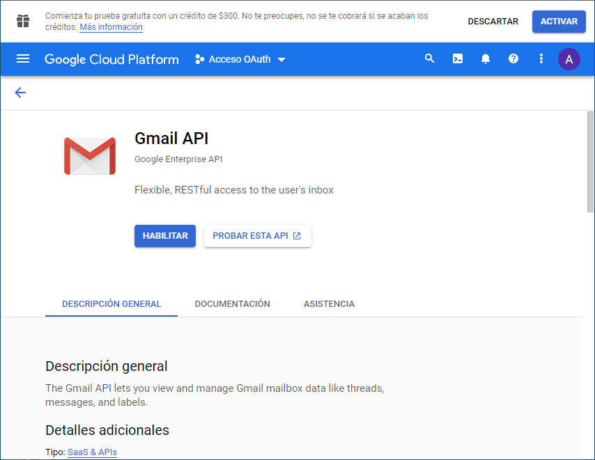A continuación debemos definir una pantalla de consentimiento para OAuth2, que nos pedirá que creemos antes un nuevo proyecto, si aún no hemos creado ninguno:
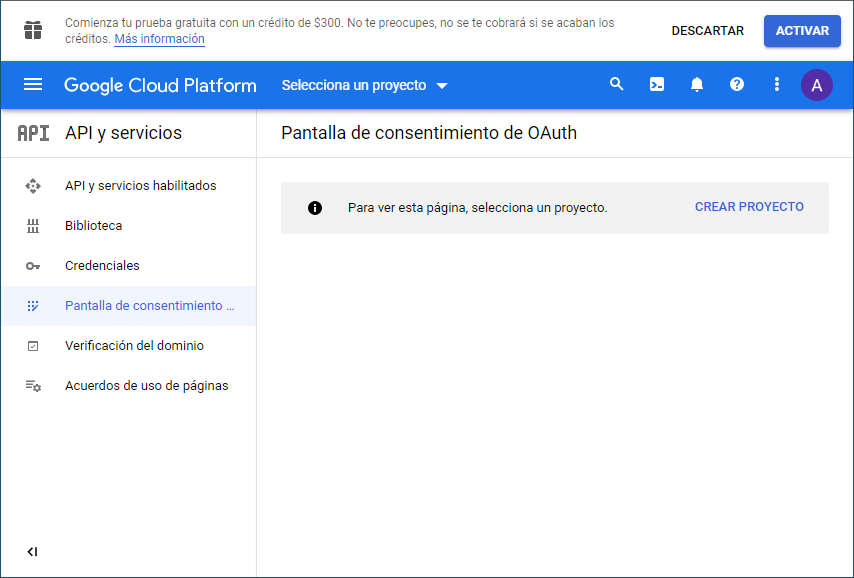 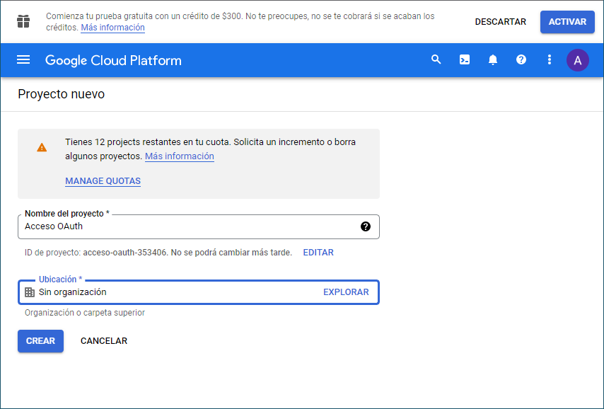Completar la definición de la pantalla de consentimiento, lo cual no tiene excesiva dificultad:
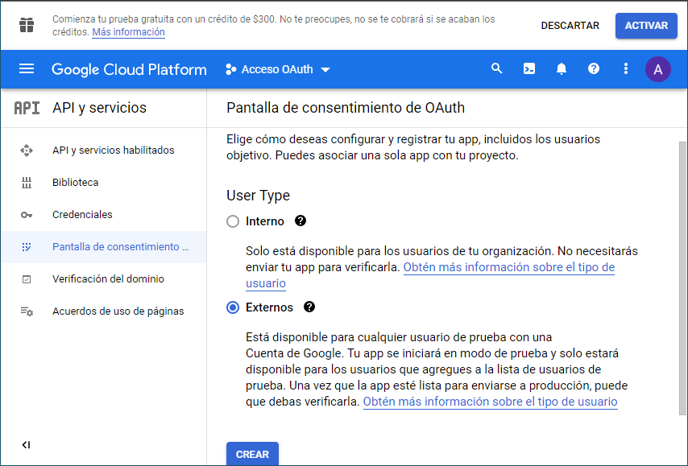 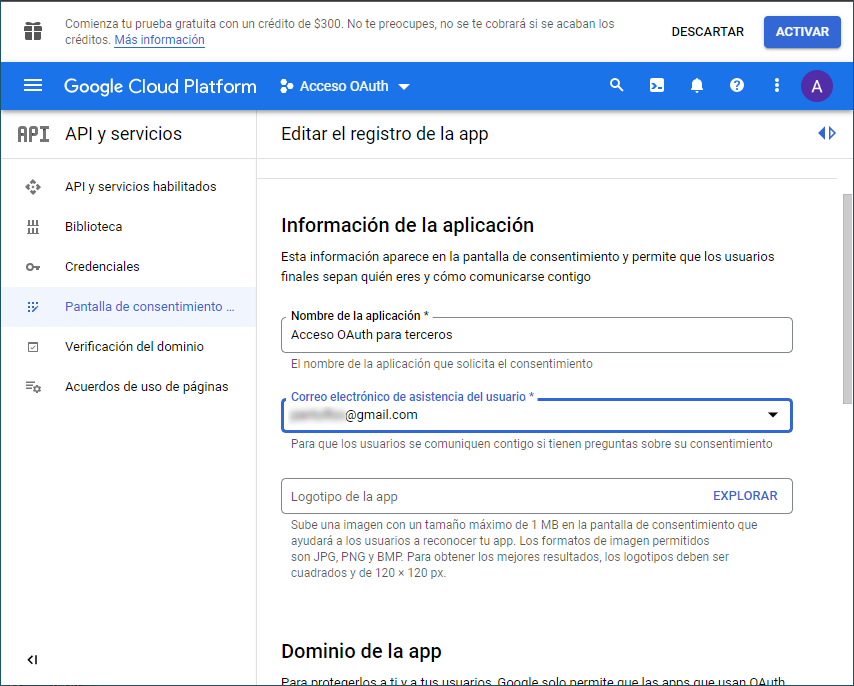 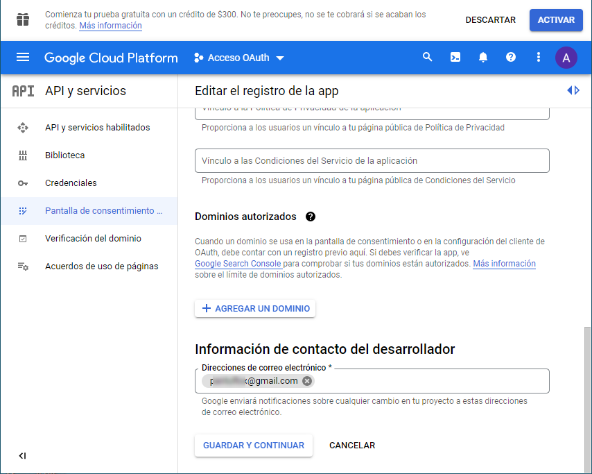Eso sí, habrá que definir los permisos que se conceden y deberemos habilitar los relativos a Gmail:
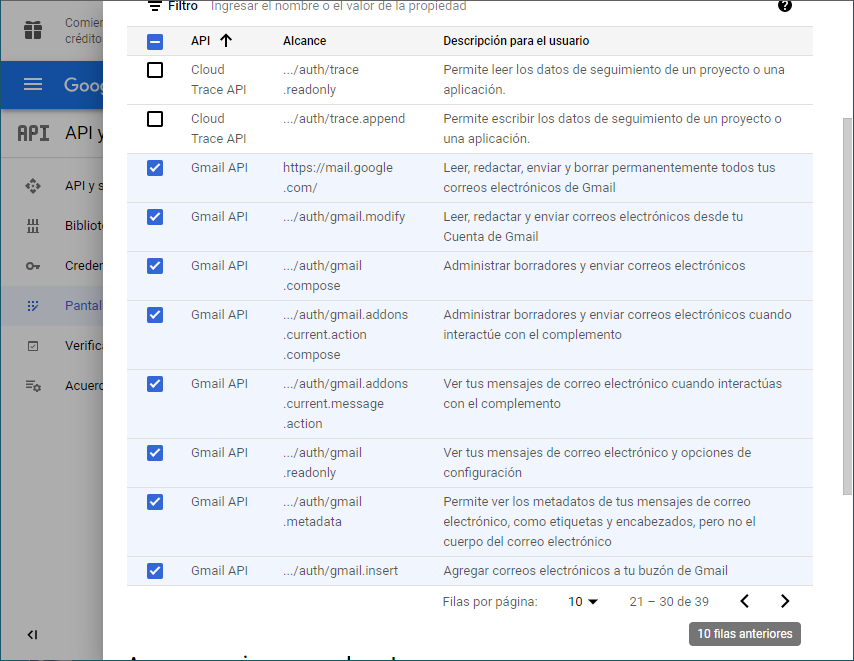Y, finalmente, habrá que incluir como usuario de prueba el usuario con el que deseamos autenticarnos:
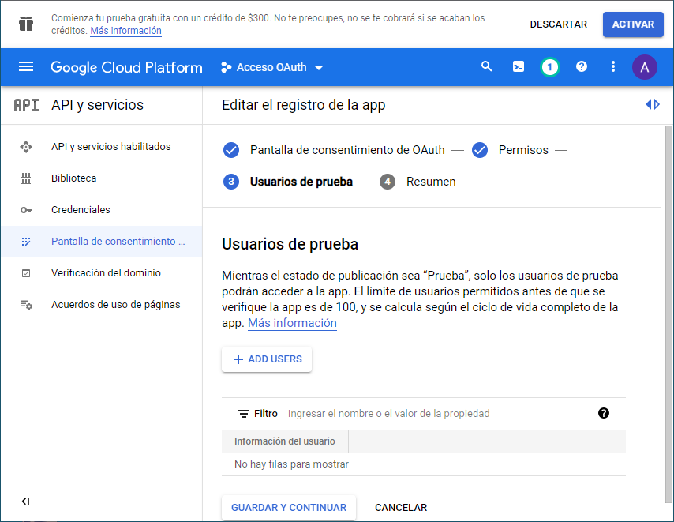Crear propiamente las credeanciales para «ID de cliente de OAuth»:
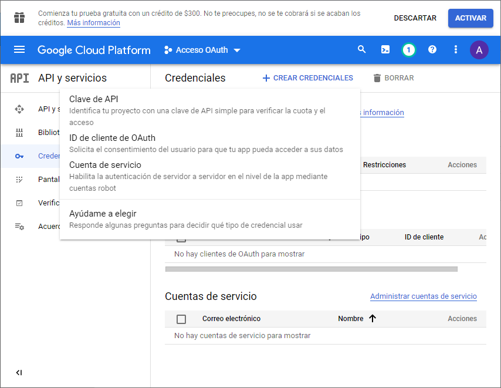 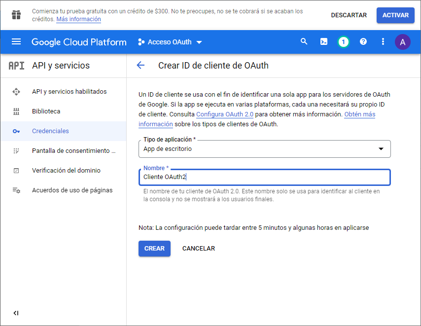 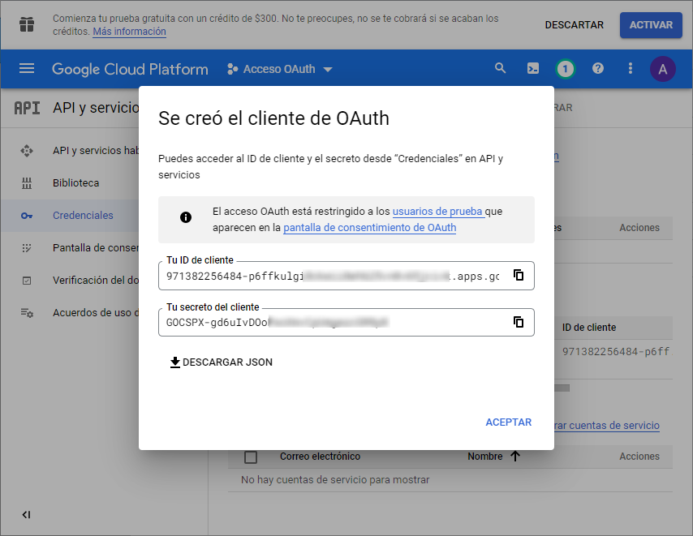
Como resultado, obtenemos las credenciales que deberemos usar en la configuración de nuestras aplicaciones.
7.3.5.2.6.2. Configuración de aplicaciones¶
El método de configuración, obviamente, es particular para cada aplicación.
7.3.5.2.6.2.1. mutt¶
mutt requiere la autenticación tanto para el envío de mensajes a
través del servidor SMTP como para el acceso IMAP interactivo. para
llevarlo a cabo, el paquete mutt provee un script escrito en
python: /usr/share/doc/mutt/examples/mutt_oauth2.py.
asi que empezaremos por copiar este script en un lugar adecuado:
$ mkdir -p .config/mutt
$ install -m750 /usr/share/doc/mutt/examples/mutt_oauth2.py ~/.config/mutt/
La estrategia del script es almacenar el token de acceso en un archivo cifrado para lo cual en principio usa GPG (véase GNUpg para más detalles sobre las órdenes siguientes). Como en Debian es una dependencia del propio mutt no será necesaria ninguna instalación adicional.
Ilustremos cómo usar GPG para cifrar el archivo. Lo primero es generar una clave:
$ gpg --gen-key
Nombre y apellidos: Mutt Oauth2
Dirección de correo electrónico: pericodelospalotes@token
La orden nos pedirá un nombre y una dirección de correo, que puede ser directamente la dirección de correo de la que estamos generando la autenticación, pero no necesariamente[1]. Para demostrar que no tiene por qué ser así, aquí utilizaremos la dirección ficticia pericodelospalotes@token. En cualquier caso, la clave privada se cifra con una contraseña que deberemos recordar, porque será la que se nos pregunte cuando queramos tener acceso al token.
Nota
Para que gpg-agent sepa por donde pedir la contraseña podría ser necesario definir una variable de ambiente persistente:
export GPG_TTY=$(tty)
Generada la clave, debemos editar ~/.config/mutt/mutt_oauth2.py para:
En la definición de ENCRYPTION_PIPE debemos la dirección de correo a la que asociamos la clave recién creada (pericodelospalotes@token)
Añadir las credenciales client_id y client_secret obtenidas bajo el epígrafe anterior (que están referidas a la cuenta real pericodelospalotes@gmail.com).
Una vez hecho, podemos obtener el token y almacenar en un archivo ejecutando la orden:
$ ~/.config/mutt/mutt_oauth2.py -va ~/.config/mutt/pericodelospalotes@gmail.com.token
Esta orden generará en primera instancia una URL que habrá que copiar en el navegador y a resultas de la cual, se generará un código que debemos facilitar al script para que acabe creando el archivo cifrado. Se nos preguntará por una dirección de correo que debe ser la dirección real (pericodelospalotes@gmail.com) ya que se utiliza para definir qué cuenta quiere ser autenticada.
Con esto ya podemos configurar mutt, pero antes probemos que el token funciona[2]:
$ ~/.config/mutt/mutt_oauth2.py -vt ~/.config/mutt/pericodelospalotes@gmail.com.token
Access token: xxx
IMAP authentication succeeded
POP authentication succeeded
SMTP authentication succeeded
Finalmente, para configurar SMTP e IMAP la configuración necesaria es la siguiente:
set smtp_url = "smtp://pericodelospalotes@gmail.com@smtp.gmail.com:587/"
set smtp_authenticators = "oauthbearer:xoauth2"
set smtp_oauth_refresh_command = "~/.config/mutt/mutt_oauth2.py ~/.config/mutt/pericodelospalotes@gmail.com.token"
set imap_user="pericodelospalotes@gmail.com"
set folder = "imap://imap.gmail.com"
set imap_authenticators=$smtp_authenticators
set imap_oauth_refresh_command=$smtp_oauth_refresh_command
Nota
GNUpg dispone de un agente que recuerda la contraseña, por lo que si envíamos varios mensajes sólo deberemos introducirla al realizar el primer envío. Por otra parte, GNUpg también puede integrarse con Gnome Keyring con lo que podríamos lograr que el acceso al sistema desbloquease la clave y no hubiera que introducirla más.
Variantes
Consisten en utilizar métodos alternativos a GPG con este mismo script:
No cifrar el archivo en absoluto. Basta con usar cat como programa de cifrado para lo cual podemos mutt_oauth2.py y dejarlo así:
ENCRYPTATION_PIPE = ['cat'] DECRYPTATION_PIPE = ['cat']
Por supuesto, nos ahorramos todo lo relativo a crear la clave GPG.
Cifrar el archivo con contraseña:
ENCRYPTION_PIPE = ['openssl', 'enc', '-aes256', '-pbkdf2', '-a'] DECRYPTION_PIPE = ['openssl', 'enc', '-aes256', '-pbkdf2', '-a', '-d']
Nota
Esta variante se deja como curiosidad, ya que es enormemente incómoda: como no hay agente que recuerde la contraseña, habrá que introducirla cada vez que se envíe un mensaje.
7.3.5.2.6.2.2. getmail¶
Debemos crear un archivo ~/.config/provider.json con este
contenido:
{
"scope": "https://mail.google.com/",
"user": "xxx@gmail.com",
"client_id": "yyy.apps.googleusercontent.com",
"client_secret": "zzz-ttt",
"token_uri": "https://accounts.google.com/o/oauth2/token",
"auth_uri": "https://accounts.google.com/o/oauth2/auth",
"redirect_uri": "urn:ietf:wg:oauth:2.0:oob",
"auth_provider_x509_cert_url": "https://www.googleapis.com/oauth2/v1/certs"
}
y permisos restringidos de lectura:
$ chmod 600 ~/.config/provider.json
donde client_id y client_secret son las credenciales que hemos obtenido en el paso anterior. Creado el archivo, podemos obtener el token necesario ejecutando:
$ getmail-gmail-xoauth-tokens -i ~/.config/provider.json
que añadirá al archivo los campos access_token y refresh_token[3]. Hecho lo cual, podemos autenticarnos creando una sección [retriever] en el archivo de configuración (el resto de puede quedarse tal como se expuso anteriormente):
[retriever]
type = SimpleIMAPSSLRetriever
server = imap.gmail.com
username = xxx@gmail.com
use_xoauth2 = true
password_command = ("/usr/bin/getmail-gmail-xoauth-tokens", "/home/usuario/.config/provider.json")
Ver también
Este artículo documenta el soporte de OAuth2 en getmail.
Notas al pie